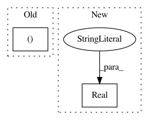

68c5b804a657d49389314f5d990be381b99a0b6b,optuna/integration/skopt.py,_Optimizer,__init__,#_Optimizer#Any#Any#,67
Before Change
// See: https://scikit-optimize.github.io/space/space.m.html//skopt.space.space.Real
high = max(distribution.low, np.nextafter(distribution.high, float("-inf")))
dimensions.append((float(distribution.low), float(high)))
elif isinstance(distribution, distributions.LogUniformDistribution):
high = max(distribution.low, np.nextafter(distribution.high, float("-inf")))
After Change
if isinstance(distribution, distributions.UniformDistribution):
dimension = space.Real(distribution.low, distribution.high, name=name)
elif isinstance(distribution, distributions.LogUniformDistribution):
dimension = space.Real(distribution.low,
distribution.high,
prior="log-uniform",
name=name)
elif isinstance(distribution, distributions.IntUniformDistribution):
dimension = space.Integer(distribution.low, distribution.high + 1, name=name)
elif isinstance(distribution, distributions.DiscreteUniformDistribution):
count = (distribution.high - distribution.low) // distribution.q
In pattern: SUPERPATTERN
Frequency: 3
Non-data size: 2
Instances
Project Name: pfnet/optuna
Commit Name: 68c5b804a657d49389314f5d990be381b99a0b6b
Time: 2019-06-12
Author: phjgt308@gmail.com
File Name: optuna/integration/skopt.py
Class Name: _Optimizer
Method Name: __init__
Project Name: scikit-optimize/scikit-optimize
Commit Name: 002a90c0329d15f57a3915153154fa8c18ca145a
Time: 2016-06-11
Author: g.louppe@gmail.com
File Name: skopt/tests/test_parameter.py
Class Name:
Method Name: test_sample_grid_consistency
Project Name: ray-project/ray
Commit Name: a4f2dd2138658cc9aef64ffe73877f82cb2a4856
Time: 2020-12-23
Author: antoni.baum@protonmail.com
File Name: python/ray/tune/tests/test_sample.py
Class Name: SearchSpaceTest
Method Name: testConvertSkOpt